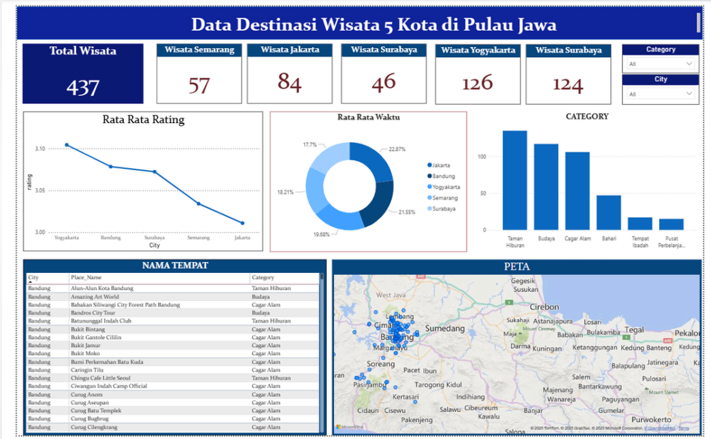

Kembali
Personal Project · Power BI, Power Query, DAX
Dashboard interaktif untuk memetakan 437 destinasi wisata di lima kota.
437destinasi wisata
126destinasi di Yogyakarta
Visual preview
Beberapa tampilan utama untuk memberi konteks cara project ini bekerja.
Tambahkan images/wisata-lima-kota.png

Business Questions
- Berapa banyak destinasi dan bagaimana sebarannya per kota?Dashboard mencatat 437 destinasi: Yogyakarta 126, Bandung 124, Jakarta 84, Semarang 57, dan Surabaya 46.
- Kota mana yang memiliki rating rata-rata tertinggi dan terendah?Yogyakarta tertinggi (sekitar 3,10) dan Jakarta terendah (sekitar 3,01). Selisihnya tipis, karena semua kota berada di rentang 3,00 sampai 3,10.
- Kategori wisata apa yang paling dominan?Taman Hiburan paling banyak, disusul Budaya dan Cagar Alam. Bahari berada di tengah, sedangkan Tempat Ibadah dan Pusat Perbelanjaan paling sedikit.
- Bagaimana distribusi rata-rata waktu antar kota?Pada grafik Rata Rata Waktu, porsi tiap kota relatif merata, berkisar dari 17,7% sampai 22,87%, sehingga tidak ada satu kota yang mendominasi.
- Di mana lokasi tiap destinasi?Peta dan tabel Nama Tempat menampilkan lokasi, kota, dan kategori setiap destinasi, dan bisa difilter lewat slicer Category dan City.
- Kota mana yang perlu penguatan promosi?Surabaya (46) dan Semarang (57) memiliki destinasi paling sedikit, sedangkan Jakarta punya rating rata-rata terendah sehingga layak dievaluasi.
Overview
Project mandiri untuk menganalisis destinasi wisata di lima kota. Saya membersihkan dan menganalisis 437 destinasi berdasarkan kota, kategori, rating, dan lokasi.
Dashboard interaktifnya menunjukkan bahwa Yogyakarta memiliki 126 destinasi dan Taman Hiburan menjadi kategori paling dominan.
Rekomendasinya: evaluasi destinasi ber-rating rendah dan penguatan promosi pada kota dengan jumlah destinasi lebih sedikit.
Stack
Link